プログラミング用の設定
VSCode・CLI・基本コマンドなど、講義共通の環境設定
プログラミング用の設定
この設定は複数の講義で共通の内容です. 各講義の言語固有のセットアップ(Python, Haskellなど)については,それぞれの講義ページを参照してください.
テキストエディタのインストール
テキストエディタとは,プログラムを書くためのソフトウェアです. プログラムを書くことをコーディング(Coding)といいます.
テキストエディタには沢山の種類があり,それぞれ独自の機能を持っています. Windwosに最初から入っている｢メモ帳｣もテキストエディタですが,プログラムを書くために様々な機能が追加された高機能なテキストエディタも沢山あります.
例えば,シンタックスハイライト機能は,以下のプログラムのように,プログラムの記述を役割や意味に応じて色付けして見やすくしてくれます.
## シンタックスハイライト
from datetime import datetime
def greet_based_on_time():
now = datetime.now()
current_hour = now.hour
if 5 <= current_hour < 12:
greeting = "Good morning, world!"
elif 12 <= current_hour < 18:
greeting = "Good afternoon, world!"
else:
greeting = "Good night, world!"
return greeting
# 関数を呼び出して結果を表示
print(greet_based_on_time())また,スペースをタブに変換するなどの機能も非常に便利です.
この講義では世界的に人気のあるMicrosoftの開発したテキストエディタである VSCode (Visual Studio Code)を利用します. 最近では生成AIを利用した自動補完機能がついたCursor(有料)などもあります. AI利用法に関しては後ほど扱いますが,ほぼ同様の機能が利用可能なので,Cursorを既に利用している方はそちらでも問題ありません. そのた,既に何かしらのテキストエディタを利用している方は,現在使用しているエディタをそのまま利用して頂いても構いませんが必要な設定等は自分で行って下さい.
VSCode をクリックして,ページ上部にあるDownloadをクリックします. 自分のPCに合わせたインストール方法を選択しましょう.
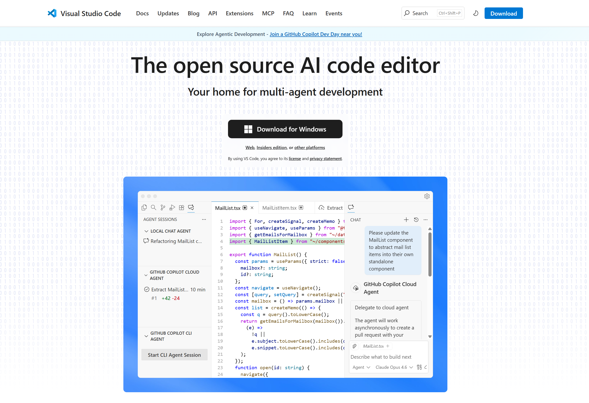
インストーラーをダウンロードしたら,クリックして開いて,｢同意｣等を進めて下さい. 基本的に設定はデフォルトのままで問題ありません.
インストールが終了したら,VSCodeが立ち上がります. サインインを求められますが,ここでは｢Continue without Sigining In｣を選択してサインイン無しで進めます.
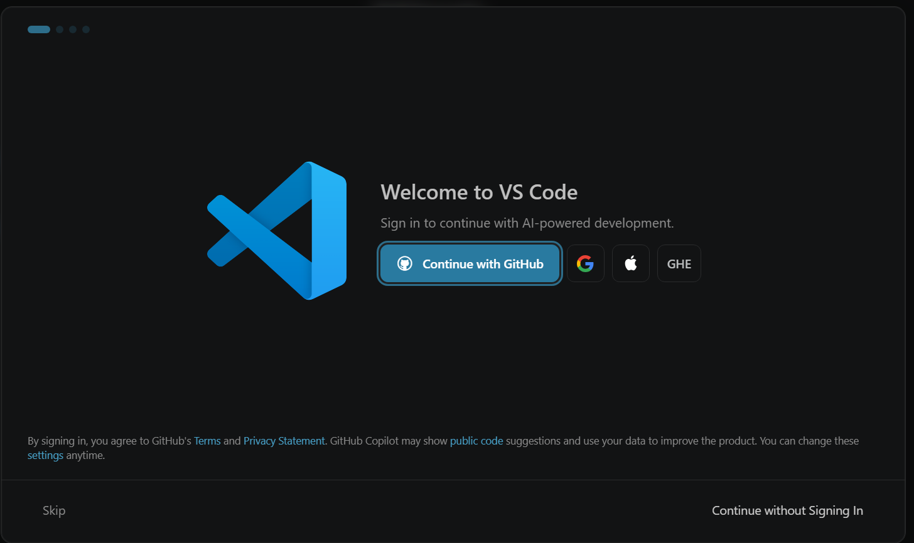
表示モードは好きなものを選択して下さい.
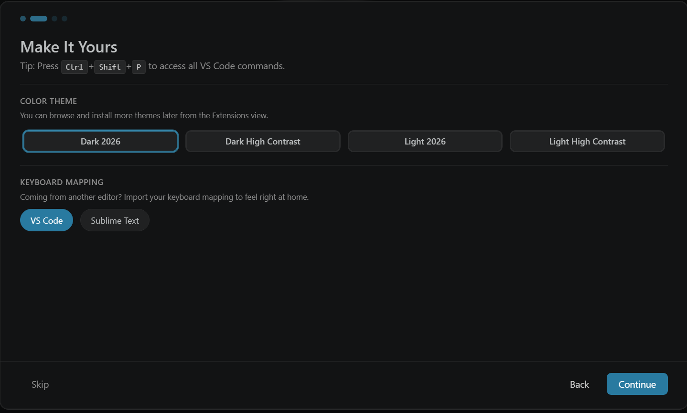
拡張機能はこのあと入れるのでSkipして下さい.
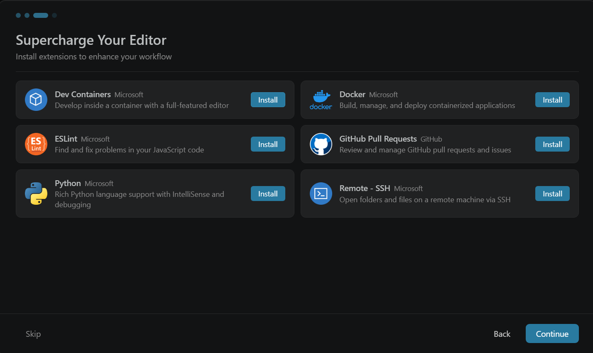
VSCodeは様々な拡張機能があり,利用しやすいようにカスタマイズすることが可能です.
その他の便利な拡張機能等に関しては自己責任で調べて導入して下さい.
左側にある四角が4つ並んだアイコンを選択します.
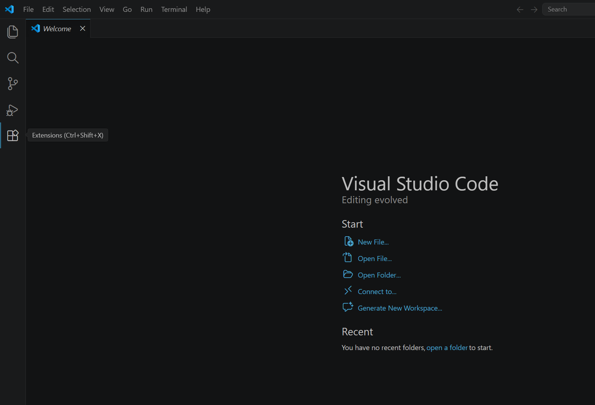
拡張機能 — 特別講義(データサイエンス)
検索窓にPythonと入力して Python の installを押します.
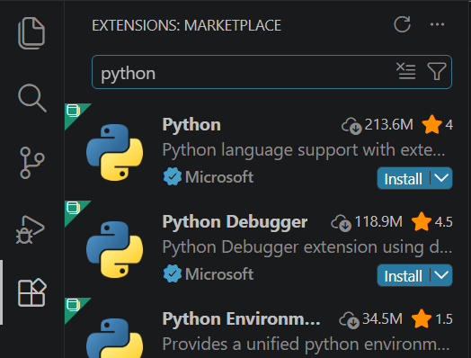
検索窓にlatexと入力して LaTeX Workshop の installを押します.
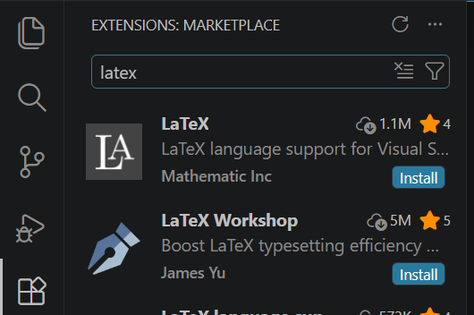
拡張機能 — 関数型プログラミング
検索窓にHaskellと入力して Haskell Syntax Highlighting の installを押します.
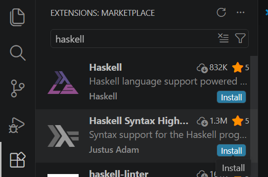
これで基本的な設定は完了です.
ファイルを編集する際には, 左側のファイルアイコンをクリックして,プログラムの保存されているフォルダを選択します.
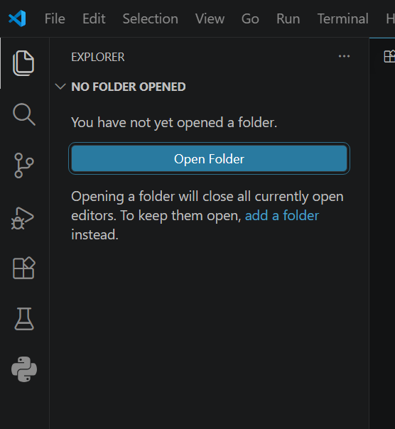
ディレクトリが表示されるので,編集したいファイルをクリックすることで編集が可能となります.
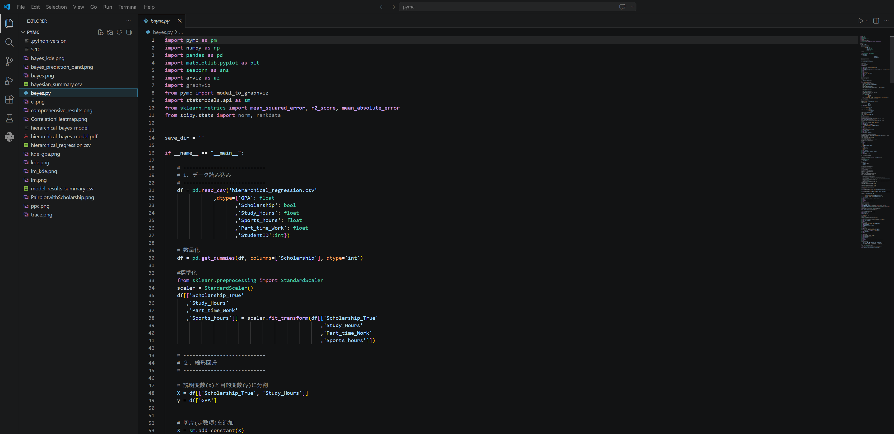
その他細かな利用法に関しては,今後実際に利用する際に説明します. また,基本的な操作やショートカット等に関しては, 各自で調べてみて下さい.
IMEの設定
プログラムは基本的に ｢半角英数字｣ で記述されます. プログラム中に全角の空白や記号が交じるとエラーの原因となる場合があります. そのため,プログラムを書く前に,そういったミスが起きないようにIMEの設定をしましょう.
タスクトレーからIMEの設定ができます．基本的に記号をすべて半角に設定しましょう（スペースは必ず半角にしましょう）．特に，句読点をコンマとピリオドに変更しましょう．
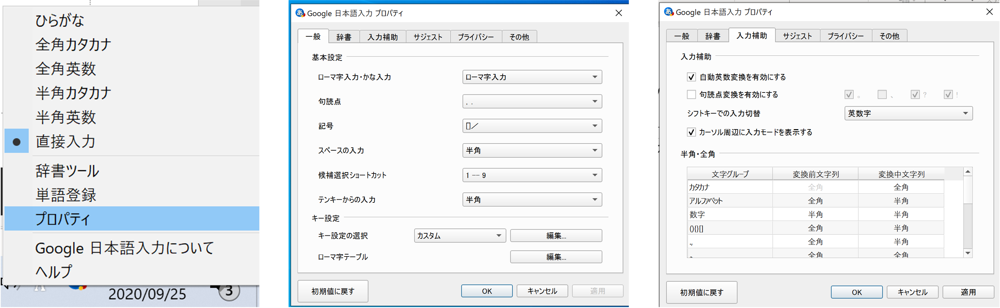
CLIの基本操作
プログラムの開発環境にはマウスなどでクリックして操作するGUI(Graphical User Interface)をもったIDE(Integrated Development Environment)などもありますが,基本的には文字によってコンピュータに命令を送るCLI(Command Line Interface)を利用します. 映画やマンガなどで,ハッカーが黒い画面に文字を打っているあれのことです.
コンピュータのオペレーティングシステムとユーザー間のCLIを提供するプログラムをShellといい,Windowsでは,Command PromptやPowerShellなどがあります. MacなどのUnix系では,Bashやzshがあります. いずれも (Windows) Terminalというソフトウェアを介して利用します.
本講義では環境や好みによって好きな環境で開発して構いませんが,ここでは,PowerShellの利用法を解説します.
Windows11の検索バーで Terminalと検索して,出てきた Terminalをクリックしましょう.

自動的にWindows PowerShellが起動します. 立ち上がった,黒色の画面に文字でコマンド(命令)を入力して,コンピュータを操作します.
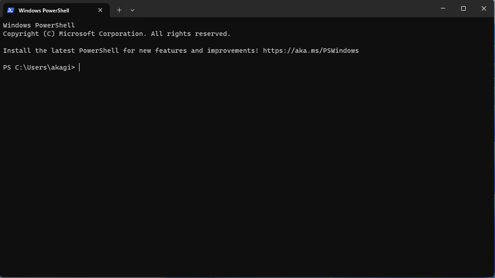
エンコーディング
実際にコマンドを入力する前に, 初心者がつまづきやすいポイントとして,Windowsのエンコーディングについて解説します.
PCは人間の使う文字（日本語，英語など）が理解できません.PCは機械語と呼ばれる言語で命令を受け付けます.一方で,人間は機械語を読むのが困難です.そこで,人間の使う文字と,機械語の間に変換ルールを設けて人間の文字でされた命令をPCにわかる文字に変換します.この変換ルールを文字エンコーディングと呼びます.
エンコーディングには複数の種類があります(日本語設定のWindowsはShift-JIS,Unix系はUnicodeが一般的です). PythonはUTF-8という文字エンコーディングがデフォルトなので,Windowsにおいても可能な限りUTF-8を用いた方が良いです.
そこで,ターミナル上で利用するエンコーディングを変更します.
PowerShellを起動して, chcp 65001 と打ち込み, PowerShell上で利用する文字エンコーディングをUTF-8に変更しましょう. chcpが利用する文字コードを変更するコマンド(change code page)で,その後に変更したい文字コードを入力します. 65001はUTF-8のコードページ(Windows独自の文字エンコーディング)です. これはPowerShellを起動する度に行ってください．
chcp 65001と入力すると,
Active code page: 65001
PS C:\Users\user>のように表示されるはずです.
日本語表示
Power Shellの設定によっては日本語が表示されず,日本語部分が □ で置き換えられて表示されます.これは,使用しているフォントに日本語が含まれていないために発生します.
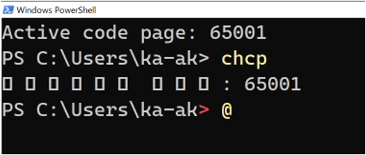
設定を変更してて日本語を表示可能にしましょう( 適当な日本語を入力してみて,問題なく表示されるようであれば,変更は必要ありません).
左上の下向きの矢印 > 既定値 > 外観 > フォントフェイスの部分を日本語フォントに変更し保存をクリックすることで,日本語が表示されるようになります.

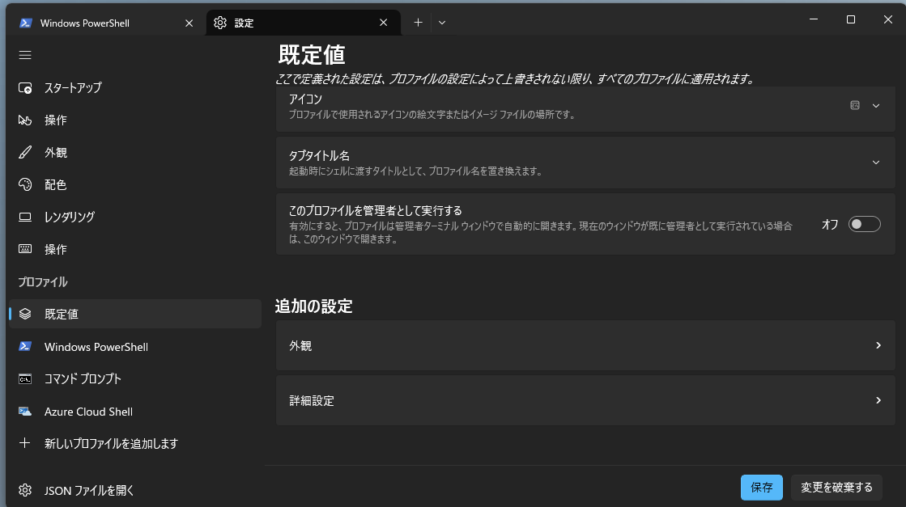

その他色やサイズなど,好きな設定に変更できます. あとで,好みにカスタマイズしましょう.
ディレクトリ
基礎的なコマンドを学ぶ前に,ディレクトリに関して理解しておきましょう. コンピュータの中のデータは,以下のような木構造になっています. このような木構造によるファイルの構造をディレクトリといいます.
C: -- Users -- hoge
|
-- hoge2 -- Desktop
|
-- Downloads
|
-- Documents -- huga
|
-- huga2CLIにおいて,ユーザはこの木構造のどこかに存在しており,この木構造を移動しながら様々な作業を行います. 現在いるディレクトリのことを working directory(以下wd)やcurrent directoryといいます.
基礎的なコマンド
ここでは, この講義で必要となる最低限のコマンド,特にディレクトリの移動に関するコマンドを学習します.
wdは, CLIの左側に表示されていることが多いです.
PS C:/Users/hoge2>のように表示されていれば今C:ドライブ下のUsers下のhoge2がwdとなります.
Windowsでは,ディレクトリを区切る文字が
¥あるいは\で表示されていると思います.Macでは,
/です.
本資料では,/を利用しています. 自分の環境に併せて適宜読み替えてください.
CLIの左側に表示されていない場合にもpwdコマンド (print working directory)を入力すると,現在のディレクトリが表示されます.
PS C:/Users/hoge2> pwd
PATH
----
C:/Users/hoge2wdの下に何があるかを調べるコマンドとしてlsコマンド(list)があります.
以下, PS C:\Users\hoge2の部分は省略します.
> ls
Desktop
Downloads
Documents※実際の画面では,もう少しいろいろな情報が書かれているかと思います.
ディレクトリ構造を確認するCommandとしてtreeがあります. treeと入力してEnterすることで,wd以下のディレクトリ構成が確認できます.
> tree
Folder PATH listing
Volume serial number is 00000157 B8F4:6480
C:.
├───Contacts
├───Desktop
├───Documents
│ ├───hoge
│ └───slds
│ └───program
├───Downloadstree [PAHT]と入力すると, wdではなく指定した[PATH]以下のディレクトリ構造が表示されます.
また, /f オプションを加えることでファイルも表示されます.
> tree .\Documents\ /f
Folder PATH listing
Volume serial number is 000001D1 B8F4:6480
C:\USERS\AKAGI\DOCUMENTS
├───hoge
│ hello.py
│ slds-2-10.py
│
└───slds
└───program
hello.pyMacの場合は,treeコマンドは入っていないので,brewなどを利用してインストールする必要があります.
brewに関しては自分で調べてみましょう.
また,オプションもWindowsとは異なっています.
| コマンド | 意味 |
|---|---|
| -d | ディレクトリのみ表示 |
| -L N | N 階層まで表示 |
| -P X | 正規表現Xに従って表示 |
> tree
.
├── hoge
│ └── hoge.py
└── huga
└── huga.py
3 directories, 2 files
> tree -d
.
├── hoge
└── huga
3 directories
> tree -L 1
.
├── hoge
└── huga
3 directories, 0 files
> tree -P "hoge*"
.
├── hoge
│ └── hoge.py
└── hugawdから別のディレクトリに移動するコマンドとして cd コマンド(change directory)があります
cd [移動先] と打つことで,lsコマンドで出てきた,ディレクトリに移動することができます.
> ls
Desktop
Downloads
Documents
> cd Documents
> pwd
PS C:/Users/hoge2/Documents移動先のディレクトリ名はすべて自分で入力する必要はありません. 最初の数文字を入力してTab Keyを押すと,自動で保管してくれます.
cd .. と打つと一つ前のディレクトリ,cd ~と打つとホームディレクトリ(基本的には最初に開いた際にいた場所)に一挙に移動することができます.
> pwd
PS C:/Users/hoge2/Documents
> cd ..
> pwd
PS C:/Users/hoge2
> cd Documents/huga
> pwd
PS C:/Users/hoge2/huga
> cd ~
> pwd
PS C:/Users/hoge2mkdir [作りたいディレクトリ名] コマンド(make directory)で,新しいディレクトリを作成できます.
rmdir [消したいディレクトリ名] コマンド(remove directory)で,ディレクトリを消すことができます.
> pwd
PS C:/Users/hoge2
> ls
Desktop
Downloads
Documents
> cd Documents
> ls
huga
huga2
> mkdir huga3
> ls
huga
huga2
huga3
> rmdir huga3
> ls
huga
huga2rmdir コマンドでは中身のあるディレクトリは消せません. オプションを追加することで消せますが,危険なのでここでは教えません.興味があったら自分で調べてみましょう.
touch [作りたいファイル名] コマンドで空のファイルを作成できます. テキストエディタを開く前に,CLIからファイルだけ先に用意しておきたいときに便利です.
rm [消したいファイル名] コマンド(remove)でファイルを削除できます. rmdirがディレクトリ用であるのに対し, rmはファイル用です.
rmで削除したファイルはゴミ箱に入らず,基本的に復元できません. 実行前に対象が正しいかを必ず確認しましょう. なおrm -r [ディレクトリ名]とするとディレクトリを中身ごと削除できますが,誤って重要なファイルを消してしまう事故が起きやすいので,慣れるまでは使わない方が安全です.
> ls
huga
huga2
> touch memo.txt
> ls
huga
huga2
memo.txt
> rm memo.txt
> ls
huga
huga2プログラムの中断
CLI上でプログラムを実行している最中に止めたくなることがあります(例えば無限ループに入ってしまった場合など). そのようなときは Ctrl + C (Ctrlキーを押しながらCキー) を入力することで,実行中のプログラムを強制的に中断できます. これから何度も使うので覚えておきましょう.
練習:作業用ディレクトリを作ろう
これから,作業をするためのディレクトリをコマンドで作成しましょう.
- (OneDrive,icloudなどのクラウドストレージではない) Documentsに移動
- Programs というディレクトリを作成し移動
以降は受講している講義に応じてディレクトリを作成してください(名前は好きに設定して良いです).
特別講義(データサイエンス)の場合
- Python というディレクトリを作成し移動
- slds というディレクトリを作成し移動 (slds; special lecture data science)
これからこの講義で利用するプログラムなどはsldsに保存しましょう.
関数型プログラミングの場合
- Haskell というディレクトリを作成し移動
- functional_programing というディレクトリを作成し移動
これからこの講義で利用するプログラムなどはfunctional_programingに保存しましょう.